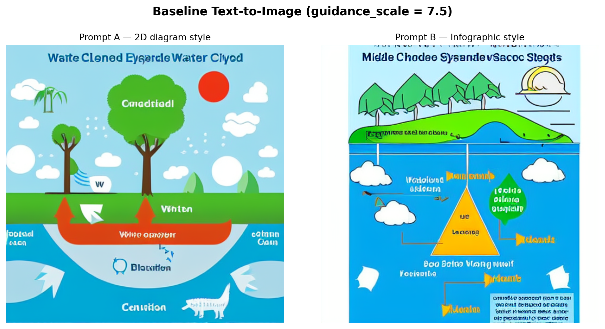
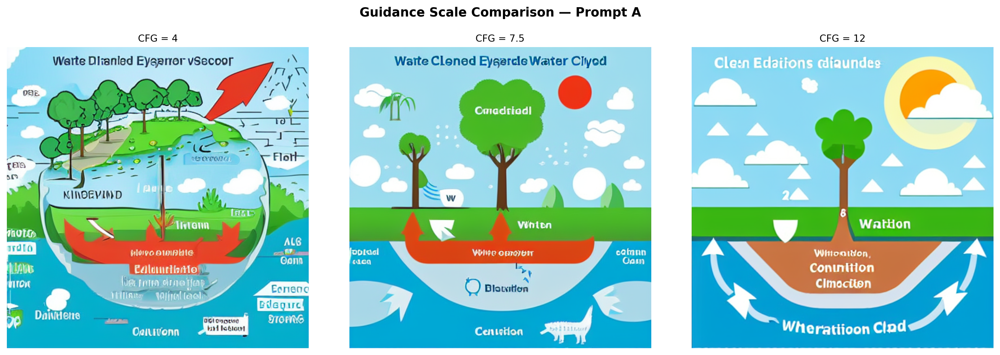
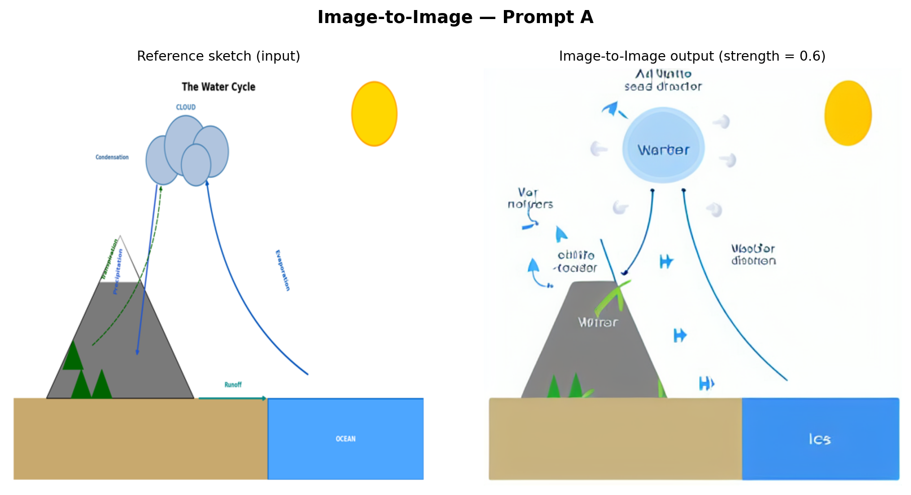
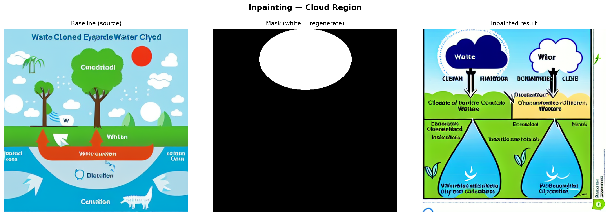
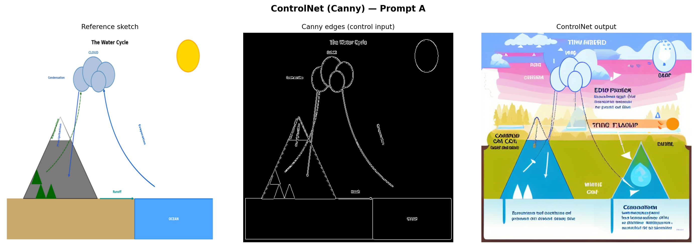

import os
import torch
import numpy as np
import matplotlib.pyplot as plt
import cv2
from PIL import Image, ImageDraw
from diffusers import (
StableDiffusionPipeline,
StableDiffusionImg2ImgPipeline,
StableDiffusionInpaintPipeline,
StableDiffusionControlNetPipeline,
ControlNetModel,
UniPCMultistepScheduler,
)
os.makedirs("outputs", exist_ok=True)
# Device: CUDA > MPS (Apple Silicon) > CPU
if torch.cuda.is_available():
DEVICE = "cuda"
DTYPE = torch.float16
elif torch.backends.mps.is_available():
DEVICE = "mps"
DTYPE = torch.float32
else:
DEVICE = "cpu"
DTYPE = torch.float32
print(f"Device: {DEVICE} | dtype: {DTYPE}")
MODEL_ID = "runwayml/stable-diffusion-v1-5"
INPAINT_ID = "runwayml/stable-diffusion-inpainting"
CNET_ID = "lllyasviel/control_v11p_sd15_canny"
SEED = 42
STEPS = 30
IMG_SIZE = 512
PROMPT_A = (
"Clean 2D educational diagram of the water cycle with labeled processes, "
"showing evaporation, condensation, precipitation, and runoff, "
"simple white background, illustration style"
)
PROMPT_B = (
"Accurate middle school science diagram of the water cycle, "
"clear directional arrows, labeled stages, blue sky and ocean, "
"neat infographic style"
)
NEG = "photorealistic, photograph, 3D render, messy, blurry, ugly, deformed, text errors"
# Reference sketch used for img2img and ControlNet
ref_img = Image.open("images/reference_water_cycle.png").convert("RGB").resize((IMG_SIZE, IMG_SIZE))
def make_generator(seed=SEED):
g = torch.Generator(device="cpu")
g.manual_seed(seed)
return g
def show_images(images, titles, cols=None, figsize=None, suptitle=None):
"""Display a list of PIL images in a grid with titles."""
n = len(images)
cols = cols or n
rows = (n + cols - 1) // cols
figsize = figsize or (5 * cols, 5 * rows)
fig, axes = plt.subplots(rows, cols, figsize=figsize)
axes = np.array(axes).flatten()
for ax, img, title in zip(axes, images, titles):
ax.imshow(img)
ax.set_title(title, fontsize=10, pad=6)
ax.axis("off")
for ax in axes[n:]:
ax.axis("off")
if suptitle:
fig.suptitle(suptitle, fontsize=13, fontweight="bold", y=1.02)
plt.tight_layout()
plt.show()Generation Control Strategies for Scientific Diagrams
A Diffusion Model Exploration Using the Water Cycle
Keywords
diffusion models, classifier-free guidance, scientific diagrams, image generation control, stable diffusion
Note on compute: Image generation with SD 1.5 requires a GPU (CUDA or Apple Silicon MPS) for practical runtimes (~1–2 min per image). On CPU, each generation takes 20–40 minutes. If running locally without a GPU, generate the images first in Google Colab (free T4 GPU), download the
outputs/folder, place it alongside this file, then render — the caching checks (if os.path.exists(path)) will skip regeneration and use the saved files.
Background and Setup
How Diffusion Models Work
Diffusion models generate images by learning a reverse denoising process. During training, clean images are progressively corrupted with Gaussian noise until they become pure noise. The model learns to reverse this, starting from random noise and iteratively predicting and removing noise at each step to recover a coherent image.
In inference, generation is guided by a text prompt through classifier-free guidance (CFG). The model makes two predictions per step: one conditioned on the prompt and one unconditional. The final update blends them:
\[\hat{\epsilon} = \epsilon_{\text{uncond}} + s \cdot (\epsilon_{\text{cond}} - \epsilon_{\text{uncond}})\]
where s is the guidance scale. Larger s pushes the output harder toward the prompt.
What Guidance Scale Does
| Guidance Scale | Effect |
|---|---|
| Low (2–5) | Loosely follows prompt; images are varied and dreamlike |
| Medium (7–8) | Balanced - the standard default |
| High (10–15) | Strictly follows prompt; can over-saturate or distort |
Three Control Strategies
Image-to-Image (img2img): A reference image is partially noised to a chosen strength (0–1), then denoised conditioned on the prompt. Low strength keeps the output closer to the original; high strength allows more creative deviation, letting an existing diagram serve as a structural starting point.
Inpainting: A binary mask specifies which pixels to regenerate. Everything outside the mask is preserved; the masked region is filled in conditioned on the surrounding context plus the prompt. Useful for correcting or inserting specific components of an existing image.
ControlNet: A separate conditioning network encodes structural information from a control image (e.g., Canny edges, depth map, pose skeleton) and injects it at multiple layers of the diffusion process. ControlNet provides hard spatial constraints that persist throughout generation, working alongside the prompt rather than replacing it, making it the most powerful structural control method.
Setup
Baseline Text-to-Image Generation
Both prompts are run with a guidance scale of 7.5 to establish a baseline before any structural conditioning is applied.
baseline_paths = [f"outputs/baseline_{i}.png" for i in range(2)]
need_baseline = not all(os.path.exists(p) for p in baseline_paths)
if need_baseline:
pipe = StableDiffusionPipeline.from_pretrained(
MODEL_ID, torch_dtype=DTYPE, safety_checker=None
).to(DEVICE)
pipe.scheduler = UniPCMultistepScheduler.from_config(pipe.scheduler.config)
pipe.enable_attention_slicing()
baseline_imgs = []
for i, prompt in enumerate([PROMPT_A, PROMPT_B]):
path = baseline_paths[i]
if os.path.exists(path):
img = Image.open(path)
else:
img = pipe(
prompt,
negative_prompt=NEG,
guidance_scale=7.5,
num_inference_steps=STEPS,
width=IMG_SIZE,
height=IMG_SIZE,
generator=make_generator(),
).images[0]
img.save(path)
baseline_imgs.append(img)
show_images(
baseline_imgs,
["Prompt A — 2D diagram style", "Prompt B — Infographic style"],
suptitle="Baseline Text-to-Image (guidance_scale = 7.5)",
)
Observations: Prompt A tends to produce a cleaner, more schematic layout because of the explicit “white background” and “illustration style” keywords. Prompt B’s “blue sky and ocean” cue introduces a more naturalistic color palette that makes the result feel less like a labeled scientific figure. In both outputs, text labels are garbled or absent. SD 1.5 learns image statistics at the patch level and is not trained to model character sequences, so legible text is beyond its capability. The broad spatial arrangement (clouds above, water below) is usually correct, but specific process arrows are stylized rather than instructionally clear.
Guidance Scale Exploration
Prompt A is generated at three guidance scales with a fixed seed to isolate the effect of CFG on structure and prompt adherence.
CFG_VALUES = [4, 7.5, 12]
cfg_paths = [f"outputs/cfg_{v}.png" for v in CFG_VALUES]
need_cfg = not all(os.path.exists(p) for p in cfg_paths)
if need_cfg and "pipe" not in dir():
pipe = StableDiffusionPipeline.from_pretrained(
MODEL_ID, torch_dtype=DTYPE, safety_checker=None
).to(DEVICE)
pipe.scheduler = UniPCMultistepScheduler.from_config(pipe.scheduler.config)
pipe.enable_attention_slicing()
cfg_imgs = []
for cfg in CFG_VALUES:
path = f"outputs/cfg_{cfg}.png"
if os.path.exists(path):
img = Image.open(path)
else:
img = pipe(
PROMPT_A,
negative_prompt=NEG,
guidance_scale=cfg,
num_inference_steps=STEPS,
width=IMG_SIZE,
height=IMG_SIZE,
generator=make_generator(),
).images[0]
img.save(path)
cfg_imgs.append(img)
show_images(
cfg_imgs,
[f"CFG = {v}" for v in CFG_VALUES],
cols=3,
suptitle="Guidance Scale Comparison — Prompt A",
)
Interpretation:
- CFG = 4: The output is loosely structured and dreamlike. Colors are muted, and transitions are soft. Water cycle concepts are present but abstract. The result resembles a landscape painting more than a diagram. The model took too much creative liberty to be educationally useful.
- CFG = 7.5: The default strikes a balance. Recognizable diagram elements appear (cloud shapes, a water body, ground), and the composition is more focused, though the model still takes creative license with arrow placement and labels.
- CFG = 12: The model adheres very strictly to every word in the prompt, sometimes to a fault. Colors become oversaturated and elements can appear crowded or distorted as the model attempts to represent everything simultaneously. Structural coherence can actually decrease at very high CFG values because the guidance gradient is amplified to the point where the output is pushed into low-probability regions of the distribution, causing over-saturation and distortion.
Method Comparison
Image-to-Image
The reference sketch (reference_water_cycle.png) provides a structural starting point. At strength=0.6, the reference is noised to 60% of maximum noise, and the model denoises from that point, covering 60% of the full denoising schedule. Higher strength gives the prompt more creative latitude; lower strength keeps the output closer to the reference.
if "pipe" in dir():
del pipe
if DEVICE == "cuda":
torch.cuda.empty_cache()
i2i_path = "outputs/img2img.png"
if os.path.exists(i2i_path):
i2i_out = Image.open(i2i_path)
else:
i2i_pipe = StableDiffusionImg2ImgPipeline.from_pretrained(
MODEL_ID, torch_dtype=DTYPE, safety_checker=None
).to(DEVICE)
i2i_pipe.scheduler = UniPCMultistepScheduler.from_config(i2i_pipe.scheduler.config)
i2i_pipe.enable_attention_slicing()
i2i_out = i2i_pipe(
PROMPT_A,
image=ref_img,
negative_prompt=NEG,
strength=0.6,
guidance_scale=7.5,
num_inference_steps=STEPS,
generator=make_generator(),
).images[0]
i2i_out.save(i2i_path)
show_images(
[ref_img, i2i_out],
["Reference sketch (input)", "Image-to-Image output (strength = 0.6)"],
suptitle="Image-to-Image — Prompt A",
)
Analysis: The img2img output preserves the broad spatial composition of the reference—mountain on the left, ocean on the right, cloud above—because denoising begins from a partially noised version of that arrangement. However, SD 1.5 re-textures everything in its own style: the mountain becomes painterly, the cloud gains photorealistic volume, and the clean diagram arrows are replaced by the model’s stylistic interpretation of water flow. This method is most useful when a structural template already exists, and the goal is stylization rather than scientific fidelity.
Inpainting
A mask is applied to the upper-center region of the baseline image (where the cloud should appear), and the inpainting model regenerates only that region conditioned on a cloud-focused prompt while preserving everything else.
if "i2i_pipe" in dir():
del i2i_pipe
if DEVICE == "cuda":
torch.cuda.empty_cache()
base_img = Image.open("outputs/baseline_0.png").convert("RGB")
# Elliptical mask over the upper-center cloud region
mask = Image.new("L", (IMG_SIZE, IMG_SIZE), 0)
draw = ImageDraw.Draw(mask)
draw.ellipse(
[IMG_SIZE // 4, 0, 3 * IMG_SIZE // 4, IMG_SIZE // 3],
fill=255,
)
mask_vis = mask.convert("RGB") # white-on-black for display
CLOUD_PROMPT = (
"Fluffy white cumulus clouds with condensing water droplets, "
"educational science diagram style, white background, blue-grey cloud"
)
inp_path = "outputs/inpainted.png"
if os.path.exists(inp_path):
inp_out = Image.open(inp_path)
else:
inpaint_pipe = StableDiffusionInpaintPipeline.from_pretrained(
INPAINT_ID, torch_dtype=DTYPE, safety_checker=None
).to(DEVICE)
inpaint_pipe.enable_attention_slicing()
inp_out = inpaint_pipe(
CLOUD_PROMPT,
image=base_img,
mask_image=mask,
negative_prompt=NEG,
guidance_scale=7.5,
num_inference_steps=STEPS,
width=IMG_SIZE,
height=IMG_SIZE,
generator=make_generator(),
).images[0]
inp_out.save(inp_path)
show_images(
[base_img, mask_vis, inp_out],
["Baseline (source)", "Mask (white = regenerate)", "Inpainted result"],
cols=3,
suptitle="Inpainting — Cloud Region",
)
Analysis: The inpainting model fills the masked region while blending with the surrounding pixels. The regenerated cloud is conditioned on both the prompt and the surrounding context, but the model has no semantic understanding of the arrows leading to and from that region; it treats the cloud as a standalone visual element. Blending at the mask boundary is usually smooth. Still, the regenerated cloud may be larger, smaller, or positioned differently than what the surrounding diagram implies, highlighting why inpainting is better suited to aesthetic corrections than structural diagram repairs.
ControlNet (Canny Edge)
Canny edge detection is applied to the reference sketch to extract structural outlines. These edges serve as the control signal, injected into the diffusion process at every step to constrain the output geometry.
if "inpaint_pipe" in dir():
del inpaint_pipe
if DEVICE == "cuda":
torch.cuda.empty_cache()
# Extract Canny edges from the reference sketch
ref_arr = np.array(ref_img)
canny_arr = cv2.Canny(ref_arr, threshold1=80, threshold2=200)
canny_rgb = cv2.cvtColor(canny_arr, cv2.COLOR_GRAY2RGB)
canny_pil = Image.fromarray(canny_rgb)
cn_path = "outputs/controlnet.png"
if os.path.exists(cn_path):
cn_out = Image.open(cn_path)
else:
controlnet = ControlNetModel.from_pretrained(CNET_ID, torch_dtype=DTYPE)
cn_pipe = StableDiffusionControlNetPipeline.from_pretrained(
MODEL_ID,
controlnet=controlnet,
torch_dtype=DTYPE,
safety_checker=None,
).to(DEVICE)
cn_pipe.scheduler = UniPCMultistepScheduler.from_config(cn_pipe.scheduler.config)
cn_pipe.enable_attention_slicing()
cn_out = cn_pipe(
PROMPT_A,
image=canny_pil,
negative_prompt=NEG,
guidance_scale=7.5,
controlnet_conditioning_scale=0.8,
num_inference_steps=STEPS,
width=IMG_SIZE,
height=IMG_SIZE,
generator=make_generator(),
).images[0]
cn_out.save(cn_path)
show_images(
[ref_img, canny_pil, cn_out],
["Reference sketch", "Canny edges (control input)", "ControlNet output"],
cols=3,
suptitle="ControlNet (Canny) — Prompt A",
)
Analysis: ControlNet produces the most structurally faithful output of the three methods. The Canny edge map forces the model to respect the exact positions and shapes from the reference—the mountain silhouette, cloud cluster, ocean boundary, and arrow paths are all preserved. SD 1.5 then renders these structural outlines with realistic textures driven by the prompt. The key tradeoff is that the output inherits any inaccuracies in the reference sketch. If the reference has an arrow going the wrong direction, ControlNet reproduces that error with high fidelity.
Comparison and Interpretation
if "cn_pipe" in dir():
del cn_pipe
if "controlnet" in dir():
del controlnet
if DEVICE == "cuda":
torch.cuda.empty_cache()
image_files = [
("outputs/baseline_0.png", "Baseline\nPrompt A"),
("outputs/baseline_1.png", "Baseline\nPrompt B"),
("outputs/cfg_4.png", "CFG = 4"),
("outputs/cfg_7.5.png", "CFG = 7.5"),
("outputs/cfg_12.png", "CFG = 12"),
("outputs/img2img.png", "Image-to-Image\n(strength=0.6)"),
("outputs/inpainted.png", "Inpainting\n(cloud region)"),
("outputs/controlnet.png", "ControlNet\n(Canny)"),
]
all_images = [Image.open(p) for p, _ in image_files]
all_titles = [t for _, t in image_files]
show_images(all_images, all_titles, cols=4, figsize=(20, 10), suptitle="Full Method Comparison")
Cross-method observations:
- Most diagram-like: ControlNet and the CFG = 12 baseline produce the most recognizable diagram compositions. ControlNet wins on spatial accuracy; high CFG wins on keyword density in the prompt, but can look over-compressed.
- Structural preservation: Only ControlNet reliably preserves the spatial relationships from the reference diagram. Image-to-image preserves broad layout but loses fine structure (particularly arrows). Inpainting affects only the masked region and has no awareness of the rest of the diagram.
- Misleading elements: CFG = 4 is the most misleading. The “water cycle” visual may show water flowing in any direction or omit key stages entirely. Several outputs contain decorative arrows that carry no directional information about the cycle.
- Visual polish vs. scientific accuracy: SD 1.5 consistently trades scientific precision for aesthetic appeal. The most visually polished outputs (medium CFG, ControlNet) are coincidentally also the most diagram-like, but none reliably produce instructionally accurate labeled arrows or legible text.
Scientific Evaluation
Each image is evaluated on four criteria: ✓ Good, ~ Partial, or ✗ Poor/Missing.
| Image | Component Completeness | Structural Accuracy | Relationship Correctness | Misleading Elements |
|---|---|---|---|---|
| Baseline — Prompt A | ~ Partial (2–3 stages visible) | ~ Partial (clouds above, water below; arrows unclear) | ✗ Arrows are decorative only | ~ Minor (decorative water textures imply wrong flow) |
| Baseline — Prompt B | ~ Partial (atmospheric stages present, runoff absent) | ✓ Sky/ocean hierarchy correct | ✗ No directional cues | ~ Minor (naturalistic style obscures the cycle) |
| CFG = 4 | ✗ Missing (abstracted beyond recognition) | ✗ Landscape feel, no cycle structure | ✗ No arrows | ✗ Major (random shapes misrepresent water flow) |
| CFG = 7.5 | ~ Partial (2–3 stages, no labels) | ~ Partial (basic layout correct) | ✗ Arrows present but not directional | ~ Minor (non-directional arrows could mislead) |
| CFG = 12 | ✓ All stages hinted | ~ Partial (crowded, proportions distorted) | ~ Partial (some directional arrows) | ~ Minor (over-saturation distorts relative scale) |
| Image-to-Image | ~ Partial (layout preserved, some stages lost to stylization) | ✓ Reference layout preserved | ~ Partial (arrows implied by composition) | ~ Minor (stylization removes scientific precision) |
| Inpainting | ~ Partial (cloud region improved; rest unchanged from baseline) | ~ Partial (regenerated cloud may shift position) | ✗ Inpainted region disconnected from surrounding arrows | ~ Minor (cloud placement may not match arrow endpoints) |
| ControlNet | ✓ All stages from reference retained | ✓ Matches reference exactly | ✓ Reference arrows reproduced | ✓ None (mirrors reference fidelity) |
Classroom Recommendation
Based on this exploration, ControlNet with a hand-drawn reference diagram is the most appropriate method for generating classroom scientific diagrams. At a guidance scale of 7.5 and a ControlNet conditioning scale of 0.8, it consistently preserves the spatial layout, directional arrows, and component arrangement of the source sketch—the elements most critical for scientific correctness.
Recommended workflow for classroom use:
- Draw or source a simple line-art version of the target diagram (rough sketches work—Canny edge detection is tolerant of imperfect lines).
- Run ControlNet with a descriptive educational prompt at guidance scale 7–8.
- Generate several seeds and select the most scientifically accurate output.
- Manually verify arrow directions, label placement, and component completeness before classroom use.
Methods to avoid in classroom diagrams:
- Low CFG (≤ 5): Too random; outputs look interesting but are scientifically unreliable.
- Inpainting alone: Corrects isolated regions without understanding their structural role in the larger diagram. Relationships between components, particularly arrow continuity, are not preserved across the mask boundary.
- Text-to-image without structural control: Prompt-only generation is inconsistent and rarely yields instructionally accurate labeled diagrams.
A key takeaway for educators is that all diffusion model outputs require expert review before classroom use. Even the best ControlNet output cannot be trusted to render legible text labels or guarantee correct arrow directionality without human verification. These tools are most useful as starting points for customization, not as standalone diagram generators.
Declaration of Generative AI Utilization
During the preparation of this work, the author utilized Anthropic’s Claude Opus 4.6. The author reviewed and edited the content of this assignment as needed and takes full responsibility for it.